Recomendamos ao leitor o uso criterioso das respostas aqui apresentadas. Devido a ainda muito constante atualização do livro, as respostas podem conter imprecisões e erros.
E 2.1.1. a) 4; b) 9; c) b2; d) 7; e) 170; f) 7,125; g) 3,28
E 2.1.5. (101,1)2
E 2.1.6. (11,1C)16
E 2.1.7. 50; 18
E 2.1.8. 10,5; (1010,1)2
E 2.3.2. a) 1,7889; b) 1788,9; c) 0,0017889; d) 0,0045966; e) 2,1755 × 10-10; f) 2,1755 × 1010
E 2.3.6. a) δabs = 3,46 × 10-7, δrel = 1,10 × 10-7; b) δabs = 1,43 × 10-4, δrel = 1,00 × 10-3
E 2.6.1. 2% , deve-se melhorar a medida na variável x, pois, por mais que o erro relativo seja maior para esta variável, a propagação de erros atraves desta variáveis é muito menos importante do que para a outra variável.
E 2.6.2. 3,2% pela aproximação ou 3,4% pela segundo método 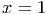.
E 2.7.1. Quando μ é pequeno, e1∕mu é um número grande. A primeira expressão produz um ”overflow” (número maior que
o máximo representável) quando μ é pequeno. A segunda expressão, no entanto, reproduz o limite 1 quando μ → 0+.
E 2.7.2. a)  +
+  + O(x4); b) x∕2 + O(x2); c) 5 ⋅ 10-4x + O(x2); d)
+ O(x4); b) x∕2 + O(x2); c) 5 ⋅ 10-4x + O(x2); d)  y + O(y2) =
y + O(y2) =  x + O(x2)
x + O(x2)
E 2.7.5. 4,12451228 × 10-16 J; 0,002%; 0,26654956 × 10-14 J; 0,002%; 4,98497440 × 10-13 J; 0,057%; 1,74927914 × 10-12 J; 0,522%.
E 2.7.6. Em ambos casos, temos a seguinte estrutura:
![[ S11 S12 ][ [A]] [ v1]
S21 S22 [B] = v2](main445x.png)
![[ ] [ ]-1[ ] 1 [ ] [ ]
[A[B]] = SS1121 SS1222 vv12 = S11S22--S12S21 S-2S221 -SS1112 v1v2](main446x.png)
![S22v1- S12v2
[A] = S11S22--S12S21
[B] = --S21v1+S11v2
S11S22- S12S21](main447x.png)
Usando derivação logarítmica, temos


![1-∂[A]- = - ----S22-----
[A]∂S11 S11S22- S12S21
1-∂[A]- = - ---v2----+ ----S21----= - [A]⋅---S22-----
[A1]∂∂S[A12] S22v1S-12 S12v2 S11S22- S12S21 [B ] S11S22- S12S21
[A]∂S21- = S11S22--S12S21
1-∂[A]- = ----v1----- ----S11----= [A]⋅-----S12----
[A]∂S22 S22v1- S12v2 S11S22- S12S21 [B] S11S22- S12S21](main448x.png)
![1-∂[B] = -----v2----- ----S22----= [B-]----S21----
[B]∂S11 - S21v1+S11v2 S11S22- S12S21 [A]S11S22- S12S21
1-∂[B] = -----S21----
[B1]∂∂S[12B] S11S22-vS12S21 S [B] S
[B]∂S21- = - -S21v11+S11v2 + S11S222-1 S12S21 = -[A]S11S22-11S12S21
1-∂[B] = - ----S11-----
[B]∂S22 S11S22- S12S21](main449x.png)
E o erro associado às medidas pode ser aproximado por
![1- ||-1∂[A]|| ||-1-∂[A]|| ||-1-∂[A]|| ||-1-∂[A]||
[A]δ[A] = |[A]∂S11|δS11 +|[A]∂S12|δS12 +|[A ]∂S21|δS21 +|[A ]∂S22|δS22
= --1- [S δ + [A]S δ +S δ + [A]S δ ]
|detS| 22 S11 [B] 22S12 12 S21 [B ]12S22](main450x.png)


![1 1 [ [B] [B] ]
[B]δ[B] = |detS| [A]S21δS11 + S21δS11 + [A]S11δS21 + S11δS22](main451x.png)
onde não se indicou |Sij| nem |[.]| pois são todos positivos.
Fazemos agora a aplicação numérica:
Caso do par 1-2:

![1 1
[A]δ[A] = 1200 [20×270×2%+ 20× 30× 2%+30× 140×2% +30×20×2%]
= -216 =0.18= 18%
1200
1[B]δ[B] = 11200 [140× 270× 2% +140×30×2%+ 270× 140× 2% +270×20×2%]
-426
= 1200 =0.355=35.5%](main453x.png)
Caso do par 1-3:


![-1δ[A] = -1--[200×270×2%+ 200× 30× 2% +30×15× 10%+ 30× 200× 10%]
[A] 513580540,6
= 52550 ≈0.0337= 3.37%
-1δ[B] = -1--[15× 270×2% +15×30×2%+ 270× 15× 10% +270× 200× 10%]
[B] 553585950
= 53550 ≈ 0.11=11%](main455x.png)
Conclusão, apesar de o sensor 3 apresentar uma incerteza cinco vezes maior na sensibilidade, a escolha do sensor 3 para fazer par ao sensor 1 parece mais adequada.
E 3.1.1. Observamos que a equação é equivalente a cos(x) -x = 0. Tomando, então, f(x) = cos(x) -x, temos que f(x) é contínua em [0,π∕2], f(0) = 1 e f(π∕2) = -π∕2 < 0. Logo, do teorema de Bolzano 3.1.1, concluímos que a equação dada tem pelo menos uma solução no intervalo (0,π∕2).
E 3.1.2. No Exercício 3.1.1, mostramos que a função f(x) = cos(x) - x tem um zero no intervalo [0,π∕2]. Agora, observamos que f′(x) = - sen (x) - 1. Como 0 < sen x < 1 para todo x ∈ (0,π∕2), temos que f′(x) < 0 em (0,π∕2), i.e. f(x) é monotonicamente decrescente neste intervalo. Logo, da Proposição 3.1.1, temos que existe um único zero da função neste intervalo.
E 3.1.3. k ≈ 0,161228
E 3.1.5. Escolhendo o intervalo [a,b] = [-1,841 - 10-3,-1,841 + 10-3], temos f(a) ≈ 5 × 10-4 > 0 e f(b) ≈-1,2 × 10-3 < 0, i.e. f(a) ⋅ f(b) < 0. Então, o teorema de Bolzano nos garante que o zero exato x* de f(x) está no intervalo (a,b). Logo, da escolha feita, |- 1,841 - x*| < 10-3.
E 3.1.6.Basta aplicar as ideias da solução do Exercício 3.1.5.
E 3.2.2. A primeira raiz se encontra no intervalo (0,4, 0,5). A segunda raiz no intervalo (1,7, 1,8). A terceira raiz se encontra no intervalo (2,5, 2,6).
E 3.2.3. 1,390054; 1,8913954; 2,4895673; 3,1641544; 3,8965468
 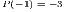
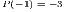
E 3.2.4. kθ =  cos(θ) com θ ∈ (0,π∕2); 1,030.
cos(θ) com θ ∈ (0,π∕2); 1,030.
E 3.2.5. 19; 23; 26; 0,567143; 1,745528; 3,385630
E 3.2.7. a) 0,623; b) 0,559; c) 0,500; d) 0,300; e) -0,3; f) -30; g) -30
E 3.2.8. a) 0,0294; b) 2.44e - 3; c) 2.50e - 4; d) 1.09 ⋅ 10-7; e) -10-12; f) -10-12; g) -10-12
E 3.3.1. -1,8414057
E 3.3.2. 0,7391
E 3.3.3. Tomemos x(1) = 1 como aproximação inicial para a solução deste problema, iterando a primeira sequência a), obtemos:

Iterando a segunda sequência b), obtemos:

Este experimento numérico sugere que a iteração a) converge para 1,745528 e a iteração b) não é convergente.
E 3.3.9. x > a com a ≈ 0,4193648.
E 3.3.12. 0.0431266
E 3.4.1.
 , pelo que devemos
cuidado nas singularidades. Traçamos o gráfico da função f(x) = tg (x) - 2x2 no Scilab usando os seguintes
comandos:
, pelo que devemos
cuidado nas singularidades. Traçamos o gráfico da função f(x) = tg (x) - 2x2 no Scilab usando os seguintes
comandos:


Observamos facilmente uma raiz no intervalo (0,5, 0,6) e outra no intervalo (1,2, 1,3). Como a função f(x) é contínua fora dos pontos de singularidade da tangente, é fácil verificar que existe pelo menos uma solução nos intervalos dados pelo teorema de Bolzano 3.1.1:

![f′(x)=sec2(x)- 4x=--12--- 4x≤--12---- 4*0,5<0, x∈[0,5,0,6]
′ 2 cos(1x) cos1(0,6)
f(x)=sec (x)- 4x= cos2(x) - 4x≥ cos2(1,2) - 4*1,3>0, x∈[1,2,1,3]](main796x.png)


As raízes obtidas são 0.55970415 e 1.2703426.

Em relação à observação, o erro se deveu à falta de cuidado em compreender o problema antes de tentar resolvê-lo, em especial, à falta de
observar que a função é descontínua em múltiplos ímpares de  . Nestes pontos, a função f(x) troca de sinal, mas não passa por zero.
. Nestes pontos, a função f(x) troca de sinal, mas não passa por zero.
E 3.4.2. 0,65291864
E 3.4.3. 0.0198679; 0.533890; 0.735412; 1.13237; 1.38851.
E 3.4.5. -99.99970, -0.3376513; -1.314006.
E 3.4.8. x0 > 1.
E 3.6.5. Seja f(x) ∈ C2 um função tal que f(x*) = 0 e f′(x*)≠0. Considere o processo iterativo do método das secantes:

Subtraindo x* de ambos os lados temos:
Definimos ϵn = xn - x*, equivalente a xn = x* + ϵn
Aproximamos a função f(x) no numerador por


![[ ] [ ]
ϵn-ϵn-1f′(x*)+-ϵ2n-1f′′(x2*)-- ϵn-1ϵnf′(x*)+-ϵ2n-f′′(2x*)
ϵn+1 ≈ f(x*+ ϵn)- f(x*+ϵn-1)
f′′(x*)( 2 2)
= --2*--ϵnϵn-1-*-ϵn-1ϵn-
f(x +ϵn)- f(x +ϵn-1)
1f′′(x*)ϵnϵn-1(ϵn-1- ϵn)
= 2-f(x*+ϵn)- f(x*-+ϵn-1)](main915x.png)
Observamos, agora, que
![f(x*+ ϵn)- f(x*+ϵn-1)≈ [f(x*)+ f′(x*)ϵn] - [f(x*)+f′(x*)ϵn-1]
= f′(x*)(ϵ - ϵ )
n n-1](main916x.png) | (3.7) |
Portanto:


| (3.8) |
ou, equivalentemente:
|
| (3.9) |
E 3.7.1. z1 ≈ 0.3252768, z2 ≈ 1.5153738, z3 ≈ 2.497846, z4 ≈ 3.5002901, zj ≈ j - 1∕2 - (-1)j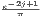, j > 4
E 3.7.2. 150 W, 133 W, 87 W, 55 W, 6,5 W
E 3.7.3. a) 42 s e 8 min2 s, b) 14 min56 s.
E 3.7.4. 118940992
E 3.7.5. 7,7 cm
E 3.7.6. 4,32 cm
E 3.7.7. (0,652919, 0,426303)
E 3.7.8. 7,19% ao mês


E 3.7.9. 4,54% ao mês.
E 3.7.10. 500 K, 700 K em t = 3 ln(2), 26 min, 4 h27 min.
E 3.7.11. 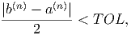, 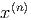
E 3.7.12. 1,5318075
E 3.7.13. Aproximadamente 2500 reais por hora.
E 3.7.14. a) 332,74 K b) 359,33 K
E 3.7.15. 1,2285751, 4,76770758, 7,88704085
E 4.1.1. Escrevemos o sistema na forma matricial e resolvemos:
![[ 1 1 1 |0 ] [ 1 1 1 | 0 ] [ 1 1 1| 0 ]
1 0 10 |-48 ~ 0 -1 9 |-48 ~ 0 10 1| 25 ~
0 10 1 25 0 10 1 |25 0 -1 9 -|48
[ 1 1 1 | 0 ] [ 1 1 1 |0 ]
~ 0 10 1 | 25 ~ 0 10 1 |25 ~
0 0 9.1| -45.5 0 0| 1 -5
[ 1 1 0 |5 ] [ 1 1 0| 5 ]
~ 0 10 0 |30 ~ 0 1 0| 3 ~
[ 0 0 1| -5] 0 0 1 -5
1 0 0 |2
~ 0 1 0 |3
0 0 1 -5](main999x.png)
 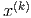
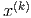
E 4.1.5.


E 4.1.6. x = [1.6890368 1.6890368 1.5823257 1.2667776 0.6333888]T
E 4.1.7.
E 4.5.1. λ =  ≈ 51.95122, para λ = 51: k1 = k∞ = 350.4, k2 = 262.1. Para λ = 52: k1 = k∞ = 6888, k2 = 5163.
≈ 51.95122, para λ = 51: k1 = k∞ = 350.4, k2 = 262.1. Para λ = 52: k1 = k∞ = 6888, k2 = 5163.
E 4.5.2. k1(A) = 36, k2(A) = 18,26, K∞(A) = 20,8.
E 4.5.3. k1 = k∞ = 6888,k2 =  e k1 = 180,k2 = 128,40972 e k∞ = 210
e k1 = 180,k2 = 128,40972 e k∞ = 210
E 4.5.4.  + 3. Quando ε → 0+, a matriz converge para uma matriz singular e o número de condicionamento diverge para +∞.
+ 3. Quando ε → 0+, a matriz converge para uma matriz singular e o número de condicionamento diverge para +∞.
E 4.5.5. As soluções são [-0.0000990 0.0000098]T e [0.0098029 0.0990294]T. A grande variação na solução em função de pequena variação nos dados é devido ao mau condicionamento da matriz (k1 ≈ 1186274.3).
Exemplo de implementação:
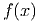

E 4.5.6. 0,695; 0,292; 0,188; 0,0237; 0,0123; 0,00967
Exemplo de implementação:
 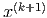
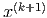
E 4.6.1.
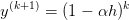

E 4.6.4. 0.324295, 0.324295, 0.317115, 0.305943, 0.291539, 0.274169, 0.253971, 0.230846, 0.203551, 0.165301, 0.082650
Exemplos de rotinas:


E 4.6.6. Permute as linhas 1 e 2.
E 4.7.1. λ = 86.1785 associado ao autovetor dado por v1 = 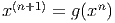 T.
E 4.7.3. 158,726
E 4.8.1. a)V 5 = 98.44V b) V 5 = 103.4V
O problema com cinco incógnitas pode ser escrito na forma matricial conforme a seguir:
 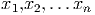
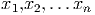


O problema com quatro incógnitas pode ser escrito na forma matricial conforme a seguir:


E 4.8.2. Dica: P(-1) = -3, P(1) = -1 e P(2) = 9 produzem três equações lineares para os coeficientes a, b e c. Resp: a) P(x) = 3x2 + x - 5, b) A ≈ 2.49 e B ≈ -1.29 c)A1 ≈ 1.2872058, A2 ≈ -4.3033034, B1 ≈ 2.051533 e B2 ≈ -0.9046921.
E 6.2.1. 5x3 + 2x - 3
E 6.4.1. ∫
01P(x)dx =  ,
,  max x∈[0,1]|f′′(x)|
max x∈[0,1]|f′′(x)|
E 6.5.1. y = -0,0407898x2 + 2,6613293x + 1,9364598
 |
E 6.5.2. a = 25,638625, b = 9,8591874, c = 4,9751219 e a = 31,475524, b = 65,691531, c = -272,84382, d = 208,23621.
E 7.1.3.
 + O(h2)
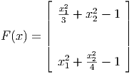
+ O(h2)
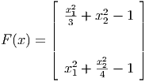

 + O(h2)
+ O(h2)
 l
l![[- h2f(-h1)+(h2- h1)f(0)+ h1f(h2)]
h1 h1 h2 h2](main1946x.png)
 + O(h)
+ O(h)
 + O(h)
+ O(h)E 7.1.4.

E 7.2.1.

Solução: [5, 9.25, 11.5, 11.75, 10]

Solução: [5, 7.375, 9.25, 10.625, 11.5, 11.875, 11.75, 1.125, 10]
E 7.2.2. 120. 133.56 146.22 157.83 168.22 177.21 184.65 190.38 194.28 196.26 196.26 194.26 190.28 184.38 176.65 167.21 156.22 143.83 130.22 115.56 100.
E 7.2.3. 391.13 391.13 390.24 388.29 385.12 380.56 374.44 366.61 356.95 345.38 331.82 316.27 298.73 279.27 257.99 234.99 210.45 184.5 157.34 129.11 100.
E 7.2.4. 0., 6.57, 12.14, 16.73, 20.4, 23.24, 25.38, 26.93 , 28, 28.7, 29.06, 29.15, 28.95, 28.46, 27.62 , 26.36, 24.59, 22.18, 19.02, 14.98, 10.
E 7.2.5. u(0)=31.62, u(1)=31.50, u(1.9)=18.17
E 7.2.6. u(1)=1.900362, u(2.5)=1.943681, u(4)=1.456517
E 7.3.1.
| exato | Ponto médio | Trapézio | Simpson | |
| ∫ 01e-xdx | 1 - e-1 ≈ 0.6321206 | e-1∕2 ≈ 0.6065307 |  ≈ 0.6839397 ≈ 0.6839397 |  ≈ 0.6323337 ≈ 0.6323337 |
| ∫ 01x2dx | 1∕3 ≈ 0.3333333 | 0.25 | 0.5 | 0.3333333 |
| ∫ 01x3dx | 1∕4 = 0.25 | 0.125 | 0.5 | 0.25 |
| ∫ 01xe-x2dx |   ≈ 0.3160603
≈ 0.3160603 | 0.3894004 | 0.1839397 | 0.3209135 |
∫
01 dx dx | tan -1(1) ≈ 0.7853982 | 0.8 | 0.75 | 0.7833333 |
∫
01 dx dx |  ln(2) ≈ 0.3465736 ln(2) ≈ 0.3465736 | 0.4 | 0.25 | 0.35 |
∫
01 dx dx | ln(2) ≈ 0.6931472 | 0.6666667 | 0.75 | 0.6944444 |

E 7.3.2. Resp: 8, 10 e 8.666667.
E 7.3.3.

E 7.3.4.
| n | Ponto médio | Trapézios | Simpson | |
| 3 | 0.1056606 | 0.7503919 | 0.5005225 | |
| 5 | 0.1726140 | 0.3964724 | 0.2784992 | |
| 7 | 0.1973663 | 0.3062023 | 0.2393551 | |
| 9 | 0.2084204 | 0.2721145 | 0.2306618 | |
E 7.3.5.


E 7.3.6.
| 1.5707963 | 2.0943951 | ||
| 1.8961189 | 2.0045598 | 1.9985707 | |
| 1.9742316 | 2.0002692 | 1.9999831 | 2.0000055 |
E 7.3.7. 0.7468337,2.4606311, 1.6595275.
E 7.3.9. R(6,6) = -10.772065, R(7,7) = 5.2677002, R(8,8) = 6.1884951, R(9,9) = 6.0554327, R(10,10) = 6.0574643. O valor desta integral com oito dígitos corretos é aproximado por 6.0574613.
E 7.3.10. w1 = 1∕6, w2 = 2∕3, w3 = 1∕6. O esquema construído é o de Simpson e a ordem de exatidão é 3.
E 7.3.11. 3
E 7.3.12. 5
E 7.3.13. ∫
01f(x)dx ≈ f(1∕3) - 2f(1∕2) +
f(1∕3) - 2f(1∕2) +  f(2∕3) com ordem 3.
f(2∕3) com ordem 3.
E 7.3.15. 5, 4, 3
E 7.3.16. ∫
-11f(x)dx = f
+ f


E 7.3.17. w1 = w3 = 1 e w2 = 0 com ordem 3.
E 7.4.1. -0.2310491, -0.2452073, - 0.2478649.
E 7.4.3. a)-0.2472261, -0.2416451, -0.2404596, -0.2400968, -0.2399563, -0.2398928. b)-0.2393727, -0.2397994, -0.2398104, -0.2398115, -0.2398117, -0.2398117.
E 7.4.4.
| n | b | c | d | e | f |
| 2 | 2.205508 | 3.5733599 | 3.6191866 | 3.6185185 | 3.618146 |
| 4 | 2.5973554 | 3.6107456 | 3.6181465 | 3.6180970 | 3.6180970 |
| 6 | 2.7732372 | 3.6153069 | 3.6181044 | 3.6180970 | 3.6180970 |
| 8 | 2.880694 | 3.6166953 | 3.6180989 | 3.6180970 | 3.6180970 |
Solução do item e: Como


E 7.4.8. 4.1138
E 7.4.9. a)19.2, 22.1, 23.3 b)513.67K
E 8.1.1. 0,4496 com h = 0,1 e 0,4660 com h = 0,01. A solução exata vale y(1) = 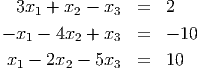 = 2 ≈ 0,4678


E 8.1.2. y(2) ≈ 0,430202 e z(2) = 0,617294 com h = 0,2, y(2) ≈ 0,435506 e z(2) = 0,645776 com h = 0,02, y(2) ≈ 0,435805 e z(2) = 0,648638 com h = 0,002 e y(2) ≈ 0,435832 e z(2) = 0,648925 com h = 0,0002.
E 8.1.3. y(2) ≈ 1,161793 com h = 0,1, y(2) ≈ 1,139573 com h = 0,01, y(2) ≈ 1,137448 com h = 0,001, y(2) ≈ 1,137237 com h = 0,0001, y(2) ≈ 1,137216 com h = 0,00001
E 8.2.1. y(1) ≈ 1,317078 quando h = 0,1 e y(1) ≈ 1,317045.
E 8.2.2.
![|-t-|-Exato-|-Euler--|EulerMelhorado-|ErroEuler|ErroEulerMelhorado|
|0.0|--1.--|--1.---|----1.-----|--0.---|------0.------|
|0.1|0.826213| 0.8 | 0.828 |0.026213 | 0.001787 |
|0.2|0.693094| 0.656 | 0.695597 |0.037094 | 0.002502 |
|0.3|0.588333|0.547366 | 0.591057 |0.040967 | 0.002724 |
|0.4|0.504121|0.462669 | 0.506835 |0.041453 | 0.002714 |
|00..56|00.4.33752816871|00..393349998964 | 00.4.33878066019 |00.0.04308272817 | 00.0.00025249248 |
|0.7|0.330305|0.294352 | 0.332551 |0.035953 | 0.002246 |
|0.8|0.289764|0.256252 | 0.291828 |0.033512 | 0.002064 |
|0.9|0.255154|0.224061 | 0.257043 |0.031093 | 0.001889 |
-1.0-0.225400-0.196634----0.227126----0.028766------0.001726-----](main2395x.png)
No Scilab, esta tabela pode ser produzida com o código:


E 8.9.1. Os valores exatos para os itens e e f são: ln
ln  e
e  ln
ln 
E 8.9.2. O valor exato é ![∘ --[-------]
αg 1- e-200α](main2476x.png) em t =
em t =  tanh -1
tanh -1
E 8.9.8.
| 0.5 | 1.0 | 1.5 | 2.0 | 2.5 | |
| Analítico | 0.3032653 | 0.3678794 | 0.3346952 | 0.2706706 | 0.2052125 |
| Euler | 0.3315955 | 0.3969266 | 0.3563684 | 0.2844209 | 0.2128243 |
| Euler modificado | 0.3025634 | 0.3671929 | 0.3342207 | 0.2704083 | 0.2051058 |
| Runge-Kutta Clássico | 0.3032649 | 0.3678790 | 0.3346949 | 0.2706703 | 0.2052124 |
| Adams-Bashforth ordem 4 | 0.3032421 | 0.3678319 | 0.3346486 | 0.2706329 | 0.2051848 |
| 0.5 | 1.0 | 1.5 | 2.0 | 2.5 | |
| Euler | 2.8D-02 | 2.9D-02 | 2.2D-02 | 1.4D-02 | 7.6D-03 |
| Euler modificado | 7.0D-04 | 6.9D-04 | 4.7D-04 | 2.6D-04 | 1.1D-04 |
| Runge-Kutta Clássico | 4.6D-07 | 4.7D-07 | 3.5D-07 | 2.2D-07 | 1.2D-07 |
| Adams-Bashforth ordem 4 | 2.3D-05 | 4.8D-05 | 4.7D-05 | 3.8D-05 | 2.8D-05 |
| 0.1 | 0.05 | 0.01 | 0.005 | 0.001 | |
| Euler | 2.9D-02 | 5.6D-03 | 2.8D-03 | 5.5D-04 | 2.8D-04 |
| Euler modificado | 6.9D-04 | 2.5D-05 | 6.2D-06 | 2.5D-07 | 6.1D-08 |
| Runge-Kutta Clássico | 4.7D-07 | 6.9D-10 | 4.3D-11 | 6.8D-14 | 4.4D-15 |
| Adams-Bashforth ordem 4 | 4.8D-05 | 9.0D-08 | 5.7D-09 | 9.2D-12 | 5.8D-13 |